20. 地图工坊素材构建
1. 暂时只支持 URP
建议新开一个模组工程， 然后打开 Package Manager 安装 Universal RP
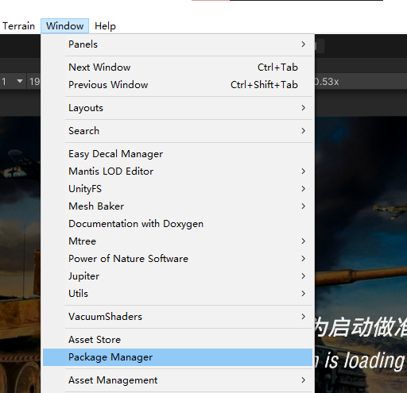
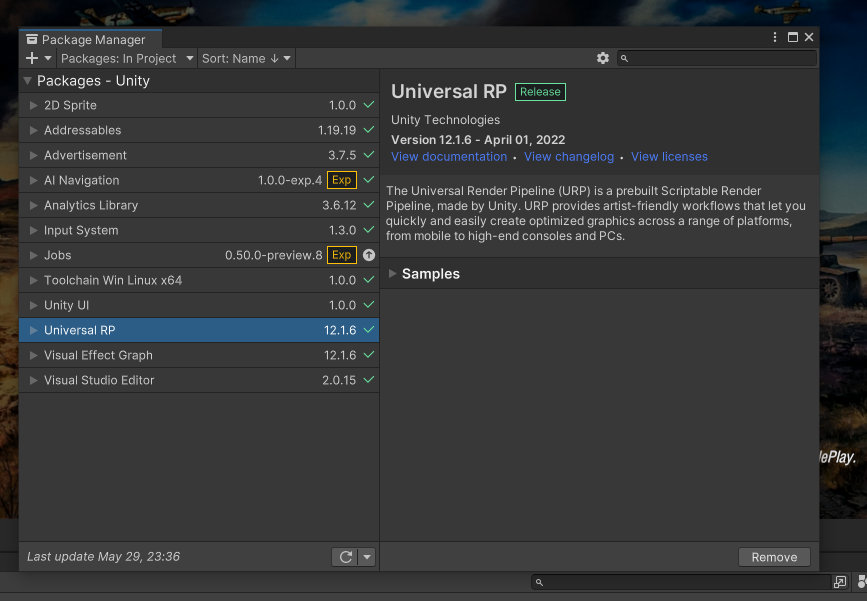
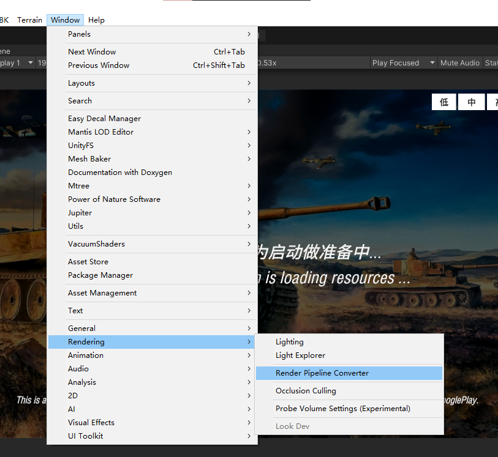
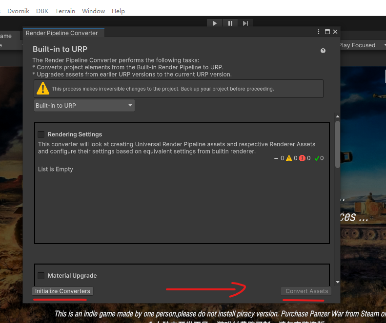
2. 素材准备
将模型拖入场景，设置坐标 0，0，0。旋转 0，0，0。
添加 碰撞 （Box Collider / Mesh Collider）
模型的层，全部设置为 Building （设置父物体为 Building 有选项勾选全部子物体）
将此模型拖回 Project 窗口，就变成了 Prefab （预制体）
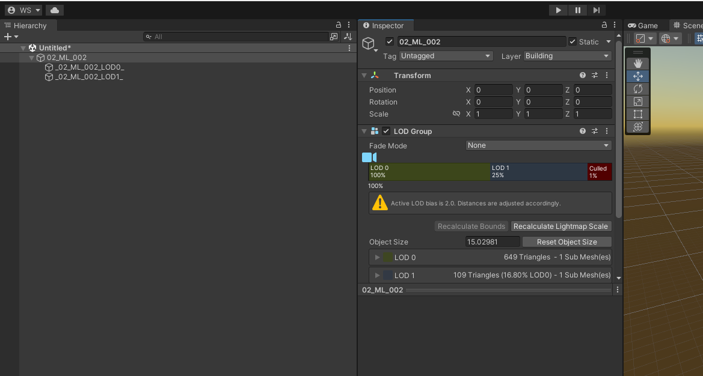
3. 创建数据文件
在已创建的 Prefab 上右键，选择 PropFromSelection，选择保存的路径（请选择在项目内的路径）。
找到创建出来的数据文件，修改渲染类型为 URP，点击更新预制体与更新缩略图
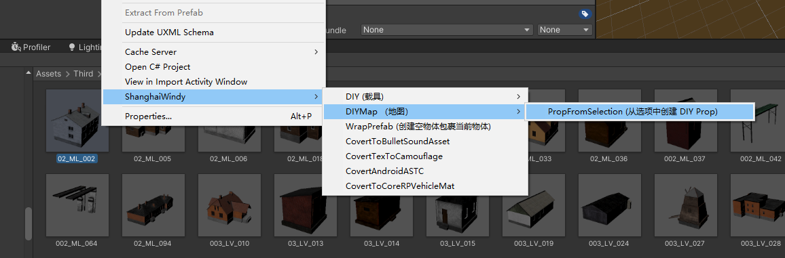
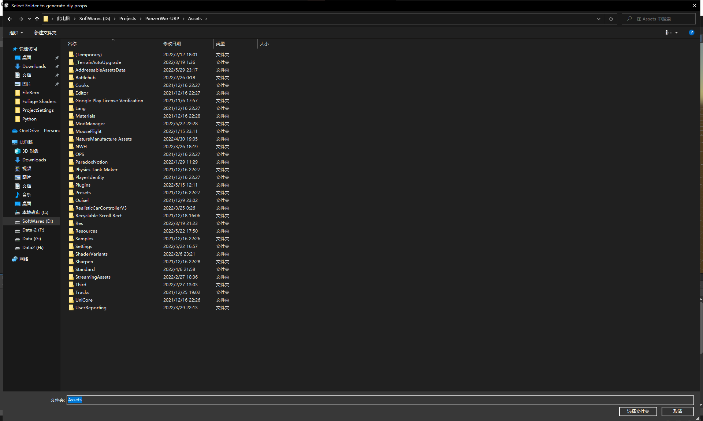
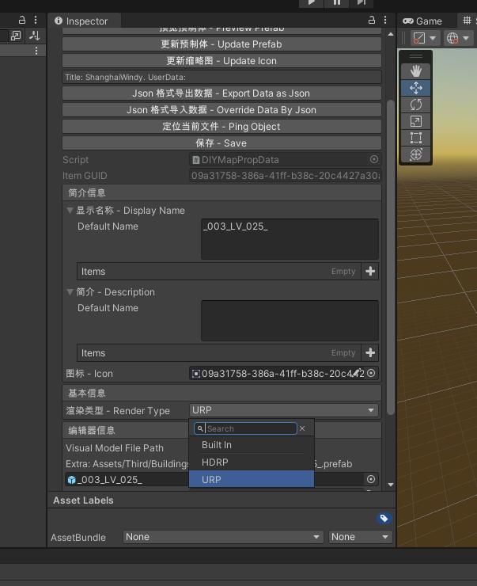
4. 打包
创建 DIYMapDataBuildAssemble，点击自动设置所有打包，将创建的 DIYMapDataBuildAssemble 加到 ModBuildPipline 中。即可正常打包。同时，可以将重复的资源加入到 LinkedObject，勾选加载依赖资源，勾选共享相同材质球，共享相同模型，则会减小模组包体大小。
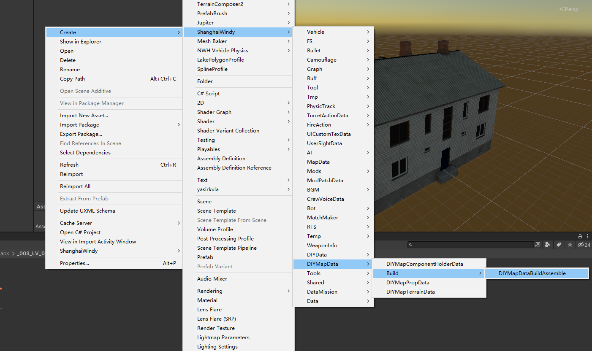
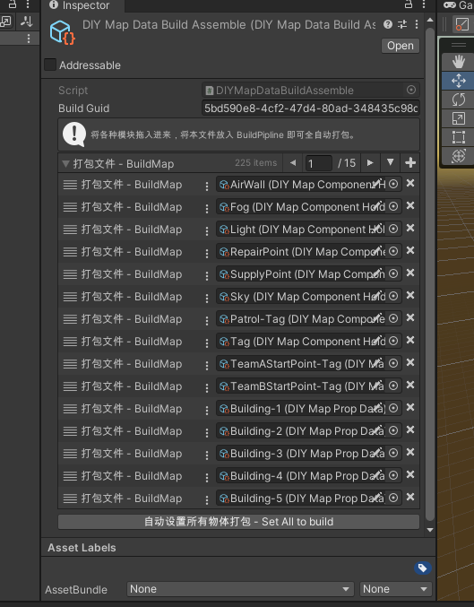
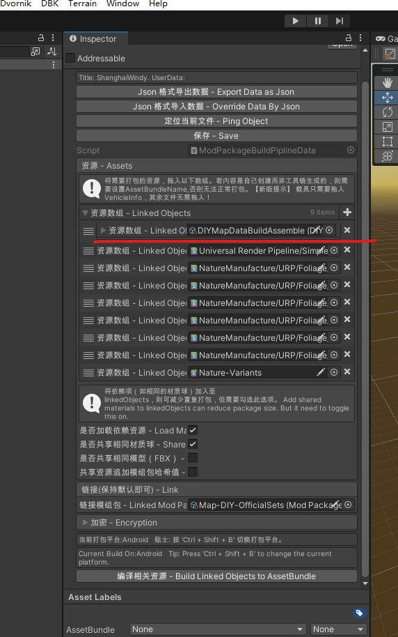